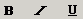

KTML3 provides the classic font style formats commands : bold, italic, underline.
Bold
In order to apply a bold style to the font, click on the Bold button
from the toolbar or use the shortcut keys “Ctrl+B”. The effect
will be applied to the selected text or to the text entered after setting
the
bold style. To check that the font is set to bold, you should place the
cursor inside the text or select it and check if the Bold button is activated.
To
remove the bold font, the user should select the text and deactivate the
Bold button by clicking on it.
Note: In Mozilla, the shortcut keys for this feature do not function.
Italic
In order to create an italic effect to the font, you can click on the
Italic button from the toolbar or use the shortcut keys “Ctrl+I”.
The effect will be applied to the selected text or to the text entered
after
setting the italic style. To check that the font is set to italic, you
should place
the cursor inside the text or select it. If the italic font is applied
to the text, the Italic button should be activated. To remove the italic
font, you should select the text and deactivate the Italic button by clicking
on
it.
Note: In Mozilla, the shortcut keys for this feature do not function.
Underline
In order to underline some text, click on the Underline button from the
toolbar or use the shortcut keys “Ctrl+U”. The effect will be
applied to the selected text or to the text entered after setting the underline
format. To check if a certain word has an underline format, one should
simply select the word or place the cursor inside it and check if the Underline
button
is activated. To remove the underline, the user should select the text
and deactivate the Underline button by clicking on it.
Note: In Mozilla, the shortcut keys for this feature do not function.